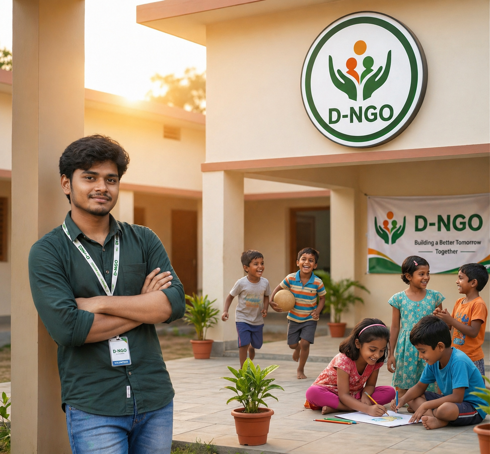

What We Do
Our Work on the Ground
From events to doorsteps — we rescue food and restore dignity


"Spreading Light, Ending Hunger"
KalyanNagar, Bangalore • Est. 2021 • Registered NGO

D NGO is a community-driven non-governmental organization based in KalyanNagar, Bangalore, dedicated to fighting food waste and hunger at the grassroots level.
Founded with the belief that no food should go to waste while people go hungry, D NGO acts as the backbone of the Food Saver platform — connecting food donors from restaurants, hotels, events and households with those who need it most.
We work closely with local communities, schools, orphanages, old-age homes, and daily wage workers to ensure that surplus food reaches the right hands at the right time.
🗺️ View Our Location on Google MapsTo eliminate food waste in Bangalore by creating a seamless bridge between food donors and the underprivileged, ensuring that every surplus meal finds a deserving recipient through technology and community effort.
A hunger-free Bangalore where no food is wasted and every individual has access to nutritious meals. We envision a compassionate society that values food, respects people, and nurtures community bonds.
We believe in the power of community. Every volunteer, donor, NGO partner and delivery person plays a vital role. Together, small acts of kindness create massive social impact.
Food waste is not just a social issue — it's an environmental one. By redistributing surplus food, we reduce methane emissions from landfills and promote a more sustainable, circular food economy.
From events to doorsteps — we rescue food and restore dignity
Dedicated volunteers and founders who make it happen every day
BSc Computer Science, D NGO. Built the Food Saver platform to digitize food rescue operations across Bangalore.
Local heroes from KalyanNagar who give their time, energy and passion to ensure food reaches those in need every day.
We collaborate with registered charities, trusts and community organizations across Bangalore to maximize our reach and impact.
Whether you want to donate food, volunteer, or partner with us — every action matters